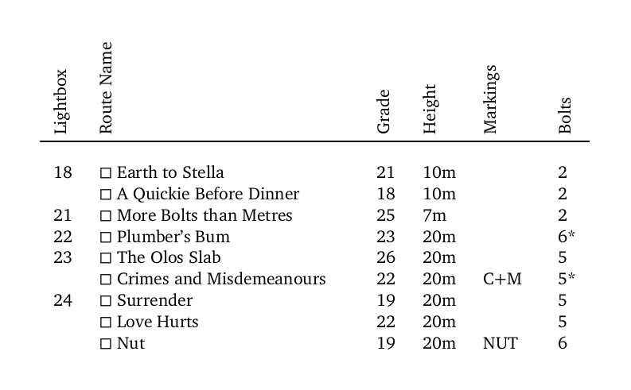

A simple map showing sport climbing routes at the Kangaroo Point Cliffs in Brisbane, Australia. With just the essential information printed on a single sheet of paper, this concise and convenient map is easy to use while actually climbing. Best of all, it's completely free.
Download Map (PDF)
Download Tick-List (PDF)
The map shows one section of the cliffs on either page. For each route the anchors and bolts are marked, with names and grades above. Navigate using the numbered light boxes at the base of the cliffs and keep an eye out for the helpful graffiti.

There is also a table of routes which can be used as a tick-list.
The entire map is hand drawn by myself. That said, it owes a lot to the wonderful resources at The Crag and the SE Queensland guidebook. Take a look at those if you'd like more detailed information about the cliffs as well as detail on routes I've left off the map.
I made this map for myself, but now that the work is done I'm happy to give it away. Print one for yourself or your friends. That said, I'd obviously prefer it if you send people to this page instead of sharing the pdf directly.
If you notice any mistakes, or would like to make a suggestion, feel free to send me a message at climbing@azrac.net or submit a pull request on github.
Download Map (PDF)
Download Tick-List (PDF)
© Tom Chappell